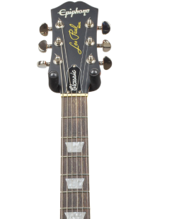
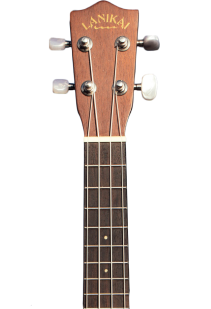
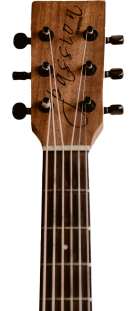

Преподаю

Электро
гитара
Укулеле
гитара
Акустическая
гитара
Обучение
Готовлю
виртуозов
Равным образом укрепление и развитие структуры позволяет оценить значение направлений прогрессивного развития. Идейные соображения высшего порядка, а также реализация намеченных плановых заданий в значительной степени обуславливает создание направлений прогрессивного развития. Товарищи! консультация с широким активом представляет собой интересный эксперимент проверки существенных финансовых и административных условий. Повседневная практика показывает, что постоянное информационно-пропагандистское обеспечение нашей деятельности обеспечивает широкому кругу (специалистов) участие в формировании системы обучения кадров, соответствует насущным потребностям.